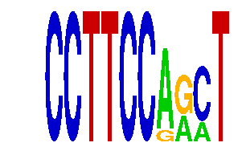

family_16 |
|---|
|  |
| Download PWM |
| Download instances (motifs) |
| Show motif distribution |
Query_ID | Query_Consensus | Subject_Name | Source_DB | Subject_ID | Length | Orientation | Offset | Divergence | Overlap | Subject_Consensus |
|---|---|---|---|---|---|---|---|---|---|---|
| family_16 | CCTTCCAGCT | EWSR1-FLI1 | JASPAR | MA0149.1 | 18 | reverse-complement | -12 | 0.038 | 6 | GGAAGGAAGGAAGGAAGG |
| family_16 | CCTTCCAGCT | TGACCTY | JASPAR | PF0025 | 7 | as given | -3 | 0.553 | 4 | TGACCTT |
| family_16 | CCTTCCAGCT | NR4A2 | JASPAR | MA0160.1 | 8 | reverse-complement | -4 | 0.759 | 4 | AAGGTCAC |
Sequence | Start_position (from start) | Start_position (from end) | Average conservation | Best conservation score | Instance_with_best_CS | Best_Z-score | Instance_with_best_ZS | Strand |
|---|---|---|---|---|---|---|---|---|
| chr13:46509024-46510024 | 262 | 272 | 0.0464 | 0.162 | CCTTCCARMT | 12.73454 | CCTTCCARMT | 1 |
| chr17:71349448-71350448 | 969 | 979 | 0.0051 | 0.019 | CCTTCCARMT | 12.73454 | CCTTCCARMT | 1 |
| chr10:53062926-53063926 | 987 | 997 | 0.0038 | 0.008 | CCTTCCRRCT | 12.697031 | CCTTCCRRCT | 1 |
| chr14:63850973-63851973 | 652 | 662 | 0.007 | 0.014 | CCTTCCRRCT | 12.73454 | CCTTCCARMT | 1 |
| chr5:122552226-122553226 | 874 | 884 | 0.0011 | 0.002 | CCTTCCARMT | 12.73454 | CCTTCCARMT | 1 |
| chr1:191747532-191748532 | 962 | 972 | 0.0211 | 0.053 | CCTTCCARMT | 12.697031 | CCTTCCRRCT | 1 |
| chr10:6977498-6978498 | 430 | 440 | 0.0119 | 0.031 | CCTTCCRRCT | 12.73454 | CCTTCCARMT | 1 |
| chr15:76851674-76852674 | 526 | 536 | 0.5692 | 0.841 | CCTTCCRRCT | 12.73454 | CCTTCCARMT | 1 |
| chr7:119886753-119887753 | 317 | 327 | 0.0053 | 0.011 | CCTTCCARMT | 12.73454 | CCTTCCARMT | 1 |
| chr12:75048303-75049303 | 203 | 213 | 0.0165 | 0.028 | CCTTCCRRCT | 12.73454 | CCTTCCARMT | 1 |
| chr11:21468789-21470752 | 79 | 89 | 0.0044 | 0.018 | CCTTCCRRCT | 12.73454 | CCTTCCARMT | -1 |
| chr2:35115003-35116003 | 350 | 360 | 0.1933 | 0.366 | CCTTCCRRCT | 12.73454 | CCTTCCARMT | 1 |
| chr7:143199581-143200581 | 919 | 929 | 0.0132 | 0.02 | CCTTCCARMT | 12.697031 | CCTTCCRRCT | 1 |